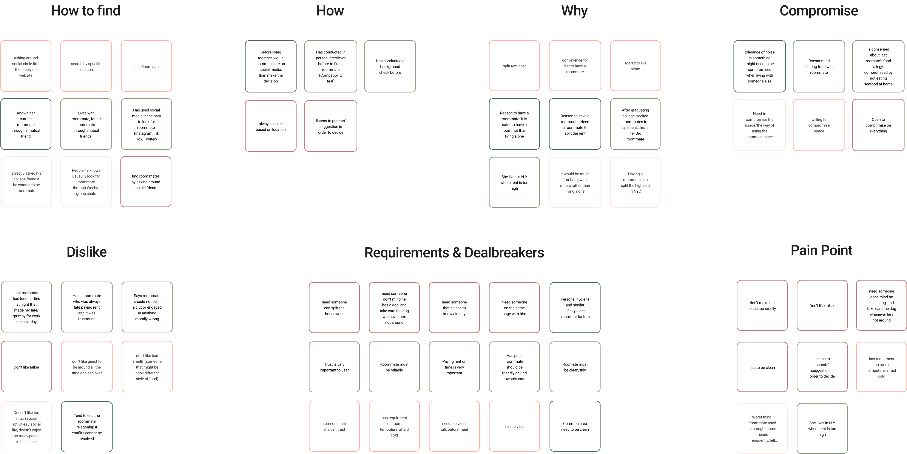
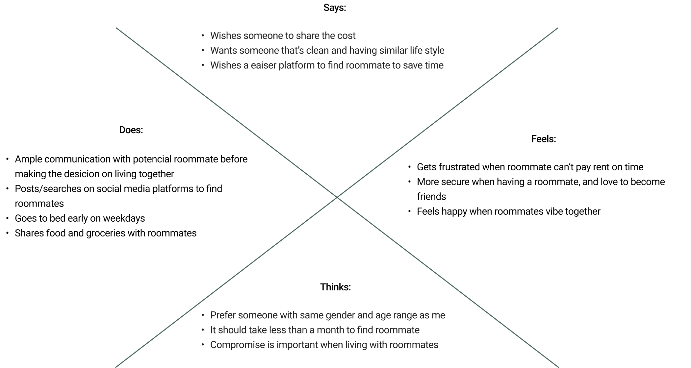
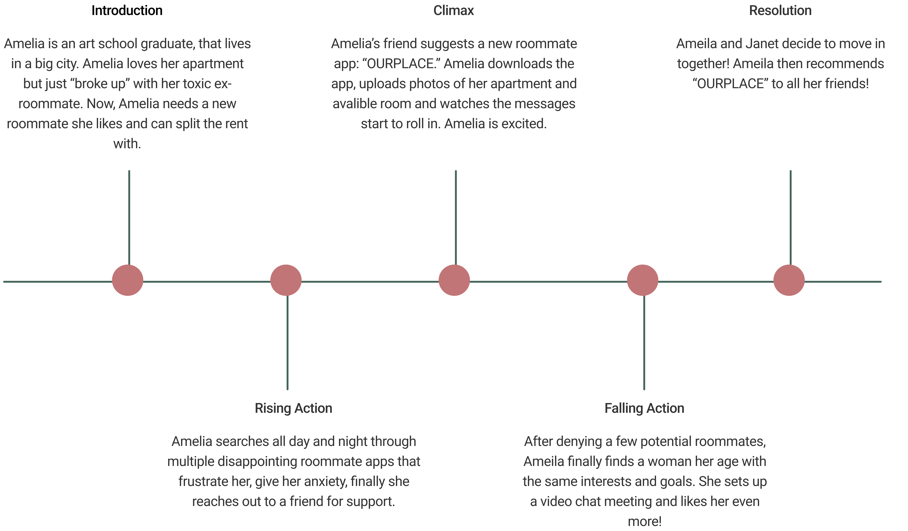

OURPLACE
Ourplace is a safe and easy to use mobile application designed to help users find their ideal rooms or roommate(s) based on their needs and unique preferences.

Problem:
The surge in rent prices is causing young adults to seek roommates to split the cost of rent. However, the task of finding a compatible, reliable, and trustworthy roommate on and offline has become stressful, tedious, and difficult. With current platforms, the primary issue is that people tend to measure their roommate based on physical appearance. It has become similar to dating apps and has lost its original purpose.
- 3 weeks
Duration
- 4 people
Team
- Project Manager
- UX Researcher
- UI Designer
Role
- Adobe Illustrator
- Figma
- Trello
- Google Drive
Tools Used
.
.
.
Empathize
.
.
.
Hypothesis Statement:
Our first task was to create a hypothesis statement. It requires us to consider what the research question implies, and which methods we should use to analyze the problem. We believe people are having a hard time finding their most compatible roommate, so how might we create an app that matches renters with like minded people also searching for a place to live; how might we use “OURPLACE” to eliminate the stress of finding reliable roommates in world class cities?
Interview:
Our team followed qualitative research and design thinking methodologies to gain insights into users’ experiences searching for compatible roommates. We interviewed people between age 18-30 living in NYC borough to gather more useful insights about their challenges and motivations.
Competitor Analysis
Several existing roommate finding platforms have faced criticism for their unintuitive design and poor user experience, leading to users only utilizing them until they find a roommate or abandoning them altogether. To enhance both the functionality and user interface of our app, we analyzed competitor platforms in the market. This analysis included a review of features, key differentiators, strengths, weaknesses, and customer feedback, in order to gain insights into market goals and strategies. By studying our competitors, we aim to continuously improve our product and provide an app that is not only functional, but also user-friendly, ensuring customer satisfaction and increasing the likelihood of positive recommendations.
.
.
.
Define
.
.
.
Affinity Diagram
After conducting interviews, we categorized the feedback into specific sections. During a brainstorming session, we arranged the gathered ideas into their relevant relationships. This helped us to organize and consolidate information related to a product, process, or problem. Our interviews revealed common themes, such as decision-making processes for choosing a roommate, essential requirements, and pain points encountered. This information will enable us to understand the actual challenges faced by individuals and inform our design solution. By taking into account this information, we developed a user persona that encompasses all the needs, expectations, and pain points of the target audience.
User Persona
We targeted users and audiences on roommate finder based on the assumptions of stakeholders. It allows us to begin designing and building immediately without getting overly bogged down with the details of user behavior. We created a profile to understand their needs and challenges better the persona helped us which better solutions due to a deeper understanding of users' pain points, needs, goals, and general characteristics.
Empathy Map

Our approach of gaining a deeper understanding of our customers is crucial to the success of our product. To comprehend their behaviors and decisions, it is essential to consider their perspectives, thoughts, actions, and emotions. This method not only provides valuable insights into our target audience but also enables us to externalize our understanding of their needs. By creating a shared understanding of users' requirements and preferences, we can ensure that all team members are on the same page and make informed decisions that align with the target audience's needs.
Story Board
We created a user story that vividly portrays the experiences of our users at each stage of their journey. This step is designed to help our clients empathize with our users, making it easier for us to convey our vision and ideas through visual representations. By presenting a clear picture of the user experience, we can facilitate better understanding and collaboration with our clients, leading to a successful product outcome.
.
.
.
Ideate
.
.
.
User Insight Statement
A recent art school graduate needs to feel less stressed about starting her career while managing the cost of living in a big city, without the help of a roommate, life can be overwhelming mentally and financially.